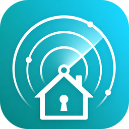

TuyaKeyLoc
Skaner urządzeń Tuya w sieci lokalnej
HA ADDON
Znalezione urządzenia
–
w sieci lokalnej
Protokół v3.3
–
Protokół v3.4
–
Z kluczem lokalnym
–
nie skanowano
Online: –
Z Local Key: –
Z MAC: –
Z Product ID: –
1Skanowanie sieci
Porty 6666 · 6667 · 7000 · co 1h
Bezczynny
Krok 1 skanuje lokalną sieć i wykrywa adresy IP + Device ID + wersję protokołu.
2Pobieranie kluczy z chmury
Metoda A — login QR (Smart Life)
Bez iot.tuya.com / IoT Core. Weź User Code z aplikacji: Me → ⚙️ → Account and Security → User Code. Potem skanuj QR w aplikacji (+ → Scan) i potwierdź login.
Bez iot.tuya.com / IoT Core. Weź User Code z aplikacji: Me → ⚙️ → Account and Security → User Code. Potem skanuj QR w aplikacji (+ → Scan) i potwierdź login.
albo klasycznie (IoT Core)
Metoda B — Access ID / Secret (iot.tuya.com)
1. Zaloguj się na iot.tuya.com → 2. Utwórz/otwórz projekt Cloud → 3. Overview: Access ID + Secret → 4. Devices → Link Tuya App Account → 5. Włącz API IoT Core (odnów jeśli wygasło). Najpierw zrób skan sieci — Device ID weźmie się automatycznie.
1. Zaloguj się na iot.tuya.com → 2. Utwórz/otwórz projekt Cloud → 3. Overview: Access ID + Secret → 4. Devices → Link Tuya App Account → 5. Włącz API IoT Core (odnów jeśli wygasło). Najpierw zrób skan sieci — Device ID weźmie się automatycznie.
Wykryto: IoT Core subscription has expired (28841002)
To nie błąd addonu — Tuya zablokowała API. Odnów darmowy trial (szczegóły w okienku pomocy).
To nie błąd addonu — Tuya zablokowała API. Odnów darmowy trial (szczegóły w okienku pomocy).
Krok 2 pobiera Local Key i nazwy urządzeń z Tuya Cloud (wizard).
3Sync z tuya-local (IP)
Porównuje IP ze skanu LAN z hostami tuya_local. QR podaje tylko publiczne IP chmury — ich nie używamy. Najpierw skan sieci, potem Napraw IP.
4Wyniki (tabela scalona)
Krok 4 scala dane ze skanu i chmury. Local Key jest domyślnie ukryty — użyj „Pokaż klucze”.
Pełne wartości bez skrótów — przewiń w poziomie przy wąskim ekranie. Przy każdym polu jest przycisk ⧉ (kopiuj).
Skanuj sieć aby wykryć urządzenia